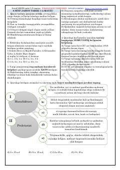

8J8-sinf Jahon tarixi fanidan 1-4-mavzular bo'yicha testlar to'plami.
Ushbu qo'llanma 8-sinf Jahon tarixi fanining 1-4-mavzulari bo'yicha tuzilgan test savollarini o'z ichiga oladi. Unda yangi davr tarixi, geografik kashfiyotlar va Uyg'onish davri kabi muhim tarixiy jarayonlar bo'yicha bilimlar tekshiriladi.